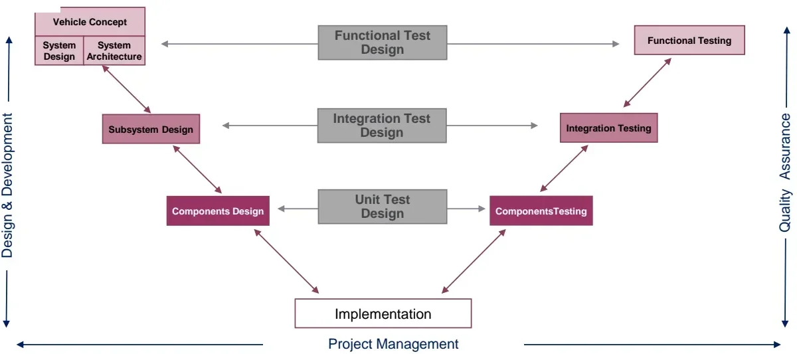
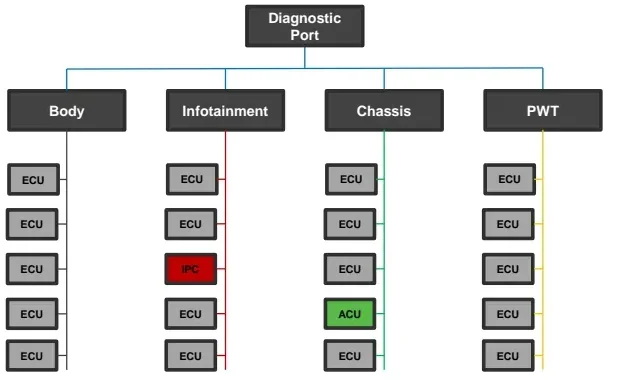
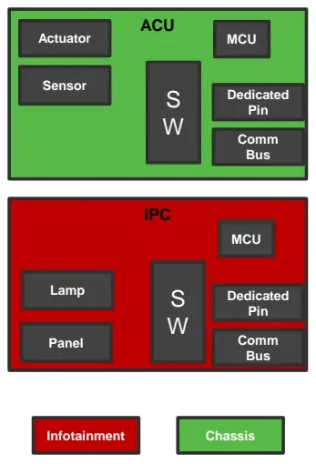

The V-Cycle Development Model¶
Building a car means assembling thousands of mechanical parts, electronic hardware and software into one product that must work safely for years — and no single team can hold all of that complexity in their head. The automotive industry organizes that work around a formal process: the V-Cycle (or V-Model). Every requirement, test and release in E/E development has its place on this V. This article explains why the process exists, how the V is structured, and follows one real feature — the airbag malfunction warning — from vehicle concept down to component testing and back up to vehicle acceptance. By the end, you will be able to place any development or testing activity on the V and identify its owner.
Why a process at all?¶
A modern car is a stack of purpose-built layers: mechanical components, electronic hardware, software, and consumables (liquids, oils, glues). Turning those layers into a product is a massive organizational effort, and the industry manages it with the People – Process – Tools framework:
- People — must have clear roles and fully understand the process.
- Process — the how of the organization: a series of steps and actions taken to reach a defined goal.
- Tools — support and improve the process, but never replace it.
At its simplest, any development process is a loop:
flowchart LR
A["Idea / Need"] --> B["Product"]
B --> C{"Validation:<br/>meets requirements?"}
C -- "OK" --> D["Good!"]
C -- "Not OK" --> AThree terms in that loop have precise meanings you will use every day:
| Term | Meaning |
|---|---|
| Requirement | A singular, documented need that a product aims to satisfy |
| Deliverable | A tangible or intangible good or service produced as a result of a project (or part of it) |
| Validation | The procedure that checks whether a product actually meets its requirements |
The car itself goes through four macro-phases: design & development, productization, serial production, and servicing. The V-Cycle governs the first one.
Who builds a car: OEM, Tier 1, Tier 2¶
You will rarely develop anything in isolation — vehicle development is split across a supply chain, and the process must coordinate all of it:
| Actor | Role |
|---|---|
| OEM (Original Equipment Manufacturer) | The car-maker itself (FCA/Stellantis, Ferrari, Audi, …). Owns the vehicle concept and the final integration. |
| Tier 1 | Specialized supplier that delivers equipment directly to the OEM — e.g. a complete subsystem or an Electronic Control Unit (ECU), one of the embedded computers that run the car's functions. |
| Tier 2 | Specialized supplier that provides parts/components to a Tier 1 — e.g. a microcontroller (MCU) or a sensor chip that ends up inside the Tier 1's ECU. |
This layering matters for the V-Cycle: the OEM runs the vehicle-level phases, while Tier 1 and Tier 2 suppliers run the subsystem and component phases — and their Vs must nest inside the OEM's. The actor responsible for each phase depends on the position in the supply chain, but the V shape is always the same.
From a flat sequence to the V¶
A vehicle project is a system of systems, so development cascades through levels of abstraction, each with its own responsible actor:
| Level | What happens there | Typical owner |
|---|---|---|
| Vehicle Concept | Vehicle "mission" definition and requirements | OEM |
| System Design / Architecture | ECU topology, communication protocol definition | OEM |
| Subsystem Design | Specs for modules: instrument cluster, ADAS (Advanced Driver Assistance Systems), infotainment, … | OEM + Tier 1/2 |
| Components Design | ECU/MCU specs, electrical components, SW modules | Tier 1/2 |
| Implementation | Hardware built, software written | Tier 1/2 |
| Components Testing | Unit tests of single components | Tier 1/2 |
| Integration Testing | ECU functionality tested in an integrated environment | Tier 1/2 |
| Functional Testing | Vehicle-level functionality and acceptance tests | OEM |
Drawn with specification flowing down on the left and verification flowing up on the right, this cascade forms the letter V:

The left branch is design & development; the right branch is quality assurance; project management spans the whole timeline underneath.
The key idea: test design happens during design¶
The horizontal arrows in the middle of the figure are what distinguishes the V from a waterfall process. While you write a specification on the left branch, you simultaneously design the test that will verify it on the right branch:
- writing component design specs → designing the unit tests,
- writing subsystem design specs → designing the integration tests,
- writing system/vehicle specs → designing the functional tests.
Why design tests early?
If a requirement cannot be tested, it is a bad requirement. Designing the test at specification time forces every requirement to be verifiable, and it means the test plan is ready the moment implementation finishes — instead of being invented under time pressure afterwards.
Don't read the V as a waterfall
Two classic newcomer mistakes: waiting for implementation to finish before thinking about tests, and treating a failed test as the end of the road. On a real project the tests already exist before the code does, and a failure simply sends you back to the matching design phase for another iteration.
Four characteristics of the V-Cycle¶
- Connected branches. Every design phase has a corresponding test phase at the same level of abstraction, and the test is designed together with the spec (see above).
- Parallelization. Phases are not strictly in series. Subsystem and component activities overlap in time, so the combined duration is shorter than the sum: Δt(Sub+Comp) < ΔtSub + ΔtComp.
- Scalability. The same V shape applies at any scale. Inside a single ECU, software development runs its own mini-V: SW requirements (subsystem design) → SW architecture → SW design/configuration → implementation → unit testing → SW module integration testing → subsystem SW functional testing.
- Iterative loops and agility. A failed test on the right branch feeds back into the matching design phase on the left — the V is traversed many times, not once.
A running example: the airbag malfunction warning¶
The following sections walk through the whole V with one concrete feature: notifying the driver that the airbag system has a malfunction.
The airbag system is safety-critical: it must deploy flawlessly in a major accident, must not deploy when not required, and any malfunction must be promptly and properly notified to the driver. The candidate module to show the warning is the IPC (Instrument Panel Cluster — the dashboard display behind the steering wheel). Functional safety analysis requires the notification mechanism to be reliable and fail-proof to a certain degree, and homologation constraints allow a standard icon, orange or red — red is chosen.
Vehicle Concept¶
The top-left phase turns the idea into requirements:
- Input: none (this is where the need is born).
- Output: product requirements/constraints, functional test design.
- Typical deliverable: a Specification of Requirements document — the list of desired functionalities, the vehicle mission, homologation constraints, and the vehicle safety concept.
System Design & Architecture¶
The vehicle gets a domain-based topology: ECUs sit on different communication buses according to their function (Body, Infotainment, Chassis, Powertrain), with a diagnostic port reaching all domains.

Note the consequence for our feature: the IPC and the ACU (Airbag Control Unit) live in two different domains — Infotainment and Chassis respectively. So the requirements produced here say:
- the ACU signals a malfunction over its communication bus to the Chassis domain controller,
- the signal is forwarded to the Infotainment domain and then to the IPC,
- the IPC switches the red warning lamp ON.
Because functional safety demanded extra reliability, an additional hardwired connection between ACU and IPC is added as a redundant path — if the bus route fails, the warning still gets through.
Deliverables of this phase: the ECU topology, the communication bus specifications (the CAN Matrix — the catalog of messages and signals on the Controller Area Network buses), and vehicle function specifications (e.g. Airbag Management).
Subsystem Design¶
Now each ECU gets its own input/output (I/O) and hardware/software (HW/SW) specifications, and the integration tests are designed in parallel.

- ACU shall perform diagnostic checks on the whole functionality (sensors, actuators, software, hardware, communication), provide a dedicated malfunction signal on the communication bus, and drive the dedicated hardwired signal according to system status.
- IPC shall handle both the bus signal and the hardwired signal coherently with the ACU, provide a dedicated red lamp and a serigraph on the panel, and turn the lamp on when a malfunction signal is received.
- Infotainment and Chassis domain controllers shall gateway (transfer) the malfunction signal between the two buses.
Deliverables: hardware schematics, SDD & SRS (Software Design Document & Software Requirements Specification), and I/O specifications.
Components Design and Implementation¶
Subsystem specs are broken down to component level — the deliverable is the component datasheet — and then the product is physically built and the software is written (implementation sits at the bottom tip of the V).
Components (Unit) Testing¶
Climbing the right branch, the first check is whether each single part works as intended. For this feature the simplest unit test is whether the single LED (Light Emitting Diode, the small indicator lamp on the panel) turns on when powered. Typical unit tests cover:
- individual SW modules or portions of code,
- single HW components (MCU, capacitors, …),
- the electrical harness.
Deliverable: the component test results document.
Integration Testing¶
One level up, the units are combined and the subsystem behavior is checked in an integrated environment. The checks verify:
- whether the ACU diagnoses a malfunction of the airbag deployment system and correctly triggers both the bus signal and the hardwired line,
- whether the IPC processes the incoming malfunction signals — bus and hardwire — and turns the LED on,
- whether the domain controllers gateway the signal between the two buses.
Deliverables: the integration test results document, and — when test results disagree with the spec — change requests against the requirements.
Functional Testing¶
At the vehicle level the feature is validated against its original concept, including performance: the system must react to an airbag malfunction as required, and the warning must satisfy the homologation constraints (the standard red icon). The output of this phase is the acceptance test result — the OEM's sign-off that the vehicle does what the Vehicle Concept asked for.
The full signal path being verified end-to-end:
sequenceDiagram
participant ACU as ACU (Chassis)
participant CH as Chassis Controller
participant INFO as Infotainment Controller
participant IPC as IPC (Infotainment)
ACU->>ACU: Diagnostic check detects malfunction
ACU->>CH: Malfunction signal on comm bus
ACU->>IPC: Malfunction on hardwired line (redundant path)
CH->>INFO: Gateway signal to Infotainment domain
INFO->>IPC: Forward malfunction signal
IPC->>IPC: Turn red warning lamp ONReading a real project plan¶
Project plans used in the industry draw the V-Cycle against a calendar. A typical plan (as in the second exercise sheet) shows, from 2019 to 2022:
- Per-ECU timelines (ECU 1…ECU 5) with coded software releases
(
1A,2A,3A, …) and hardware maturity steps (M100,B100,B200,B500, …). - Quality Gates (
QG1,QG1.5,QG2, …) — checkpoints where the project must prove a defined maturity before proceeding. - PCR — a consolidated software release that bundles several ECUs; its timeline is shifted relative to the single-ECU timelines because the bundled release can only be built after the individual ECU releases it contains.
- Vehicle fleets — Mules (early prototype vehicles), the VP fleet (Verification Prototypes) and the PS fleet (Pre-Series vehicles) — whose build dates must align with the releases they are meant to validate, and with the Verification & Validation (V&V) windows.
- J1 (Job 1) — the start of series production in the factory; software and factory preparation activities converge on this date.
The skill being trained is tracing dependencies: which release must be ready for which fleet build, which quality gate gates which phase, and what happens to the plan when one ECU's release slips.
Practice exercises¶
The two exercise sheets (V_Cycle_p1_Excercises.pdf and
V_Cycle_p2_Excercises.pdf) cover the two skills this article trained:
explaining the process, and reading a real plan against it. Work them in this
order:
- Concept review (part 1). Ten questions covering this whole article: the evolution of cars from the 80s to now, "purpose-built vehicle", why the V-Cycle is needed, OEM/Tier 1/Tier 2 differences with three examples each, requirement/deliverable/validation definitions, the levels of testing, how the two branches connect, parallelization, scalability — and a capstone: write a report applying the full V-Cycle to an Adaptive Cruise Control feature, from design to in-car usage. A first draft is written at this stage; the refined version is the final exercise for the First Milestone review.
- Plan analysis (part 2). Using the project timeline described above: redraw the V-Cycle from the plan's milestones, analyze ECU 1's timeline phase by phase (gaps, colors, ends), explain what a PCR is and why its timeline is shifted, propose activities for a PCR software release, describe the VP fleet timeline and its relationship to the vehicle timeline, quality gates, requirements and PCRs, and finally explain J1 and what software and factory activities must be prepared before it.
Deliverable
The completed report goes to automotive.training@kineton.it — when asking questions, quote the lesson ID and the exercise title.
Key takeaways
- A car is a system of systems — the V-Cycle is how the industry keeps that complexity manageable.
- Requirements are documented needs; deliverables are what phases produce; validation proves the product meets the requirements.
- Left branch decomposes (Concept → System → Subsystem → Components → Implementation); right branch verifies bottom-up (Unit → Integration → Functional/acceptance). Every spec gets its test designed in parallel; this connection between the branches distinguishes the V from a waterfall process.
- The V is parallelized (phases overlap), scalable (a whole vehicle or one ECU's software), and iterative (failures loop back into design).
- Responsibilities follow the supply chain: OEM at vehicle level, Tier 1/2 at subsystem and component level.
- Real plans map the V onto calendars with releases, quality gates, prototype fleets (Mule/VP/PS), PCRs and the J1 production start.
Where this leads
The requirements discipline introduced here is deepened in Requirements; the right branch of the V is covered in practice in Verification and Validation. The bus-level signals of the airbag example are the subject of CAN, LIN & Automotive Ethernet and are revisited in the Diagnosis lessons.
Source material¶
This article was distilled from the academy lesson materials:
- V Cycle — PDF, 1.4 MB
- V Cycle p1 Excercises — PDF, 118.2 KB
- V Cycle p2 Excercises — PDF, 145.1 KB
Downloads¶
- MP3converter — 1.5 KB